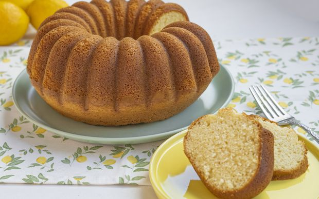

Yumuşacık Ev Keki
Evin misler gibi kek kokması başlı başına mutluluk ve huzur sebebidir. Yanına bir çay demleyerek keyif yapmalık en güzel tariflerdendir kekler. Gelin bugün evdeki malzemelerden, çok kolay bir şekilde kek yapalım. Üstelik içerisine limon kabuğu aroması yerine dilediğiniz malzemeler ile nasıl birbirinden farklı kekler yapabileceğinizi de tarifin detaylarında anlatacağız. Karşınızda yapımının basitliğiyle sizi çok mutlu edecek: Yumuşacık ev keki tarifi.
Tüm malzemeleri oda sıcaklığında kullanarak puf puf kabarmış bir kek elde etmeniz de mümkün. Biz bu kekin içerisine limon kabuğu yerine bir avuç damla çikolata, portakal kabuğu rendesi ya da ceviz ilave edebilirsiniz. Lezzetine doyamayacağınız, kolay kek tarifleri içeriğimiz de sizlere farklı fikirler verebilir. Şimdiden ellerinize sağlık!
Yumuşacık Ev Kekinin Püf Noktası
Kekte kullanacağınız tüm malzemelerin oda sıcaklığında olmasına özen gösterin. Bu sayede kekinizin tam kıvamında kabaracaktır.
Yumuşacık Ev Kekini Pişirme Önerisi
Ortası delikli olan farklı şekillerdeki kek kalıplarıyla pişirebilirsiniz.
- Yumurta ve toz şekeri mikser ile yüksek devirde 5 dakika kadar güzelce çırpın. Köpük köpük bir kıvamda ve yumurta ile şeker beyazlamış bir görüntüde olacak.
- Ardından sıvı yağ ve sütü ekleyin.
- Birkaç dakika daha mikserle çırpmaya devam edin.
- Ardından kuru malzemeleri bir kaba alın. Bu aşamada un, vanilin, kabartma tozu, tuz ve nişastayı eleyerek karışıma ekleyin.
- Son olarak rendelenmiş limon kabuklarını ekleyin.
- Yağlanmış kek kalıbına harcı aktarın. Harcın kalıba iyice yerleşmesi için tezgaha birkaç kez vurun. 180 derecede önceden ısıtılmış fırında yaklaşık 40 dakika kontrollü bir şekilde pişirin. Sürenin sonunda kürdan testi yapın. Kürdan kuru çıkarsa kekiniz pişmiş demektir.
- Kekinizi fırından aldıktan sonra oda sıcaklığında dinlendirmeye bırakın.
- Daha sonra keki bir tabağa ters çevirin ve kalıptan çıkarıp dilimleyerek servis edin. Afiyet olsun.
Yumuşacık Ev Kekinin Servis Önerisi
Dilerseniz içerisine bir avuç fındık, ceviz gibi yemişler ilave edebilir ya da portakal kabuğu ilavesiyle farklı aroma verebilirsiniz.